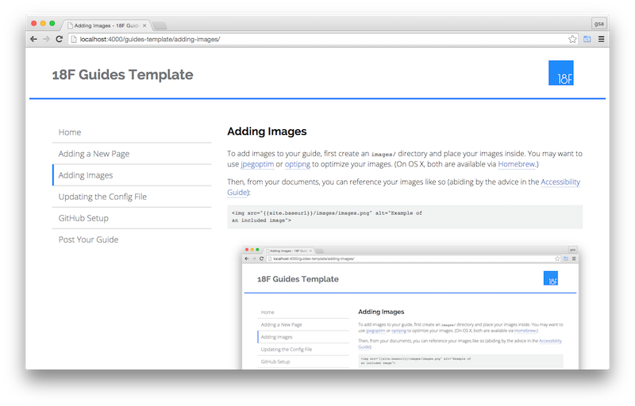

Add images
There are two ways to add images. First, if you'd like to keep all your images
in a separate directory, create an images/ directory and put your images inside it.
Otherwise, you can keep an image in the same directory as the page that
references it.
You may want to use jpegoptim or optipng to optimize your images. On OS X, both are available via Homebrew.
Now within your documents, you can reference your images as outlined below and abiding by the advice in the Accessibility Guide.
If an image is in a separate directory:
<img src="{{site.baseurl}}/images/images.png" alt="Example of
an included image">
If it's in the same directory as the source document, the link should be
relative to the parent directory of the document, specified as ..:
<img src="../images.png" alt="Example of an included image">

Next steps
Click the Update the Config File entry in the table of contents.